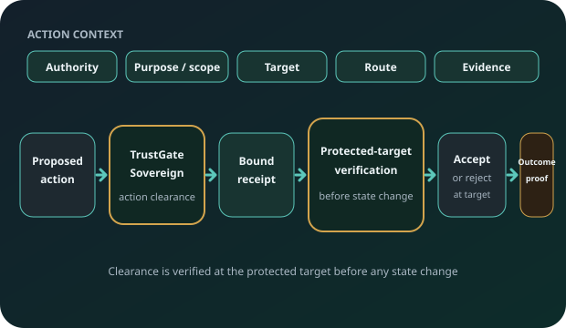
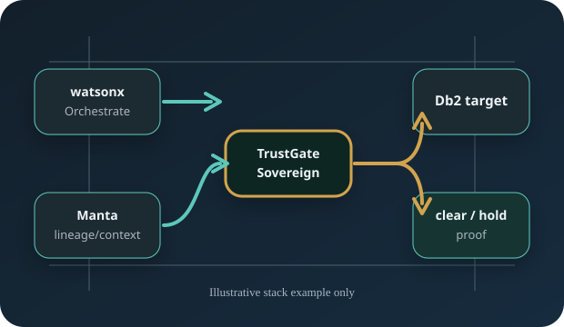
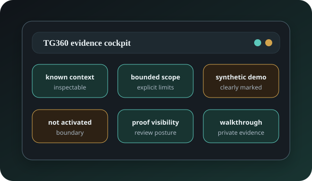

Deployment governance
Is the AI deployment supervised properly?
TrustGate Sovereign
AI is moving from recommendation to action. TrustGate Sovereign is built for the moment before action: when authority, scope, route, evidence, and proof must be checked before execution is trusted.
A governed deployment and a governed platform do not automatically authorize a specific action.

The gap
Most AI control discussions sit around deployments, platforms, models, tools, workflows, logs, or audits. Those controls matter. But they are not the same as clearing a specific action before it moves.
Is the AI deployment supervised properly?
Is the agentic platform governed and connected to trusted context?
Is this exact action allowed to execute now?
A governed airport does not mean every flight may take off.
Principal → Control → Proof
TrustGate Sovereign connects who is acting, what is requested, what context is sufficient, which route is allowed, what proof is produced, and when the correct answer is to hold instead of execute.
The public model is intentionally high-level. Private walkthroughs show more detail without exposing proof internals.
Illustrative working scenario
For example, an agentic workflow in watsonx Orchestrate may propose an action against Db2. Manta may provide lineage and context. TrustGate Sovereign sits between intent and execution: who is acting, what is requested, which data and route are involved, what evidence is sufficient, and whether the action is cleared or held.

Illustrative example only. No live watsonx Orchestrate, Manta, or Db2 integration is claimed on this public page. These products are examples of an enterprise stack. They are not required to use TrustGate Sovereign.
TG360
TG360 is the buyer-facing evidence cockpit for the TrustGate conversation. It is designed to make the control posture inspectable: what is known, what is bounded, what is synthetic in the demo, what is not activated, and where proof is visible.

TGSG surfaces
TrustGate Sovereign is designed to make several trust surfaces inspectable in private review: tool and capability trust, knowledge and retrieval authority, content and document integrity, workflow and autonomy boundaries, budget and latency envelopes, and multi-agent provenance.
Which tools and capabilities are in scope for the requested action?
Which knowledge sources and retrieval paths are sufficient for this action?
What content or document state supports the decision point?
Where does the workflow stop, escalate, or require review?
What operational envelope is acceptable before execution?
Which agentic steps led to the requested action?
These surfaces are described publicly at a category level only. Internal implementation details stay private.
Why adopt
TrustGate Sovereign helps leaders reason about action authority, risk, escalation, and proof before agentic AI is trusted with material work. The value depends on customer environment, scope, baseline, and operating model.
Clarify where agentic AI may act, and where it must pause.
Make action risk easier to inspect before execution.
Define when review, hold, or escalation is the right outcome.
Connect authority, route, evidence, and outcome in one review posture.
Prepare evidence for later review without claiming audit outcome.
Support governance of material movement before commitment.
Private walkthrough
Private walkthroughs can cover the short executive overview, the executive 360 masterclass, the technical 360 masterclass, TG360 dashboard evidence, the illustrative enterprise stack scenario, and the claims boundary.
Related systems
TrustGate Sovereign leads this page. The related systems stay secondary and support the same evidence-first discipline.
Local technical proof slice for pre-execution action certification and proof preservation.
Training-data accountability evidence packs for review by DPO, legal, risk, CISO, and audit teams.
Engineering simulation review evidence for baseline-vs-variant comparison.
Controlled disclosure
The public page shows the value pattern and the review posture. Some proof belongs in a room, not on a homepage. Private walkthroughs show controlled demos, evidence packs, TG360 context, and architecture context while source code, proof internals, private dashboards, source maps, and implementation details stay private.
Private walkthrough
Use this track for CISO, CIO, AI governance, risk, audit, enterprise architecture, technical governance, and executive adoption conversations.